소방설비산업기사(기계) (2019-03-03 기출문제)
1과목: 소방원론
1. 위험물안전관리법령에서 정한 제5류 위험물의 대표적인 성질에 해당하는 것은?
- 산화성
- 자연발화성
- 자기반응성
- 가연성
(정답률: 82%)

2. 등유 또는 경유 화재에 해당하는 것은?
- A급 화재
- B급 화재
- C급 화재
- D급 화재
(정답률: 89%)
3. 소화기의 소화약제에 관한 공통적 성질에 대한 설명으로 틀린 것은?
- 산알칼리 소화약제는 양질의 유기산을 사용한다.
- 소화약제는 현저한 독성 또는 부식성이 없어야 한다.
- 분말상의 소화약제는 고체화 및 변질 등 이상이 없어야 한다.
- 액상의 소화약제는 결정의 석출, 용액의 분리, 부유물 또는 침전물 등 기타 이상이 없어야 한다.
(정답률: 80%)
4. 질산에 대한 설명으로 틀린 것은?
- 산화제이다.
- 부식성이 있다.
- 불연성 물질이다.
- 산화되기 쉬운 물질이다.
(정답률: 58%)
5. 15 ℃ 의 물 1g을 1℃ 상승시키는데 필요한 열량은 몇 cal 인가?
- 1
- 15
- 1000
- 15000
(정답률: 69%)
6. 다음 중 부촉매 소화효과로서 가장 적절한 것은?
- CO2
- C2F4Br2
- 질소
- 아르곤
(정답률: 74%)
7. 제2종 분말소화약제의 주성분은?
- 탄산수소칼륨
- 탄산수소나트륨
- 제1인산암모늄
- 탄산수소칼륨 + 요소
(정답률: 74%)
8. 스테판-볼츠만(Stefan-Boltzmann)의 법칙에서 복사체의 단위표면적에서 단위시간당 방출되는 복사에너지는 절대온도의 얼마에 비례하는가?
- 제곱근
- 제곱
- 3제곱
- 4제곱
(정답률: 80%)
9. 연소 시 분해연소의 전형적인 특성을 보여줄 수 있는 것은?
- 나프탈렌
- 목재
- 목탄
- 휘발유
(정답률: 73%)
10. 플래시 오버(Flash -over) 현상과 관련이 없는 것은?
- 화재의 확산
- 다량의 연기 방출
- 화이어볼의 발생
- 실내온도의 급격한 상승
(정답률: 73%)
11. 포소화약제가 유류화재를 소화시킬 수 있는 능력과 관계가 없는 것은?
- 수분의 증발잠열을 이용한다.
- 유류표면으로부터 기름의 증발을 억제 또는 차단한다.
- 포의 연쇄반응 차단효과를 이용한다.
- 포가 유류 표면을 덮어 기름과 공기와의 접촉을 차단한다.
(정답률: 46%)
12. 니트로셀룰로오스의 용도, 성상 및 위험성과 저장·취급에 대한 설명 중 틀린 것은?
- 질화도가 낮을수록 위험성이 크다.
- 운반 시 물, 알코올을 첨가하여 습윤시킨다.
- 무연화약의 원료로 사용된다.
- 햇빛에서 황갈색으로 변하고 물에 녹지 않지만 아세톤, 초산에스터, 니트로벤젠에 녹는다.
(정답률: 69%)
13. 화재 시 고층건물내의 연기 유통인 굴뚝효과와 관계가 없는 것은?
- 건물내외의 온도차
- 건물의 높이
- 층의 면적
- 화재실의 온도
(정답률: 64%)
14. 270℃ 에서 다음의 열분해 반응식과 관계가 있는 분말 소화약제는?
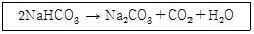
- 제1종 분말
- 제2종 분말
- 제3종 분말
- 제4종 분말
(정답률: 73%)
15. 인화점에 대한 설명 중 틀린 것은?
- 인화점은 공기 중에서 액체를 가열하는 경우 액체표면에서 증기가 발생하여 점화원에서 착화하는 최저온도를 말한다.
- 인화점 이하의 온도에서는 성냥불을 접근시켜도 착화하지 않는다.
- 인화점 이상 가열하면 증기가 발생되어 성냥불이 접근하면 착화한다.
- 인화점은 보통 연소점 이상, 발화점 이하의 온도이다.
(정답률: 73%)
16. 건축물의 방재센터에 대한 설명으로 틀린 것은?
- 피난층에 두는 것이 가장 바람직하다.
- 화재 및 안전관리의 중추적 기능을 수행한다.
- 방재센터는 직통 계단위치와 관계없이 안전한 곳에 설치한다.
- 소방차의 접근이 용이한 곳에 두는 것이 바람직하다
(정답률: 75%)
17. 목재가 열분해할 때 발생하는 가스가 아닌 것은?
- 수증기
- 염화수소
- 일산화탄소
- 이산화탄소
(정답률: 75%)
18. 물의 소화작용과 가장 거리가 먼 것은?
- 증발잠열의 이용
- 질식 효과
- 에멀전 효과
- 부촉매 효과
(정답률: 74%)
19. 소화제의 적응대상에 따라 분류한 화재종류 중 C급 화재에 해당되는 것은?
- 금속분화재
- 유류화재
- 일반화재
- 전기화재
(정답률: 85%)
20. 가연물이 연소할 때 연쇄반응을 차단하기 위해서는 공기 중의 산소량을 일반적으로 약몇 % 이하로 억제해야 하는가?
- 15
- 17
- 19
- 21
(정답률: 62%)
2과목: 소방유체역학
21. Newton 유체와 관련한 유체의 점성법칙과 직접적으로 관계가 없는 것은?
- 점성 계수
- 전단 응력
- 속도 구배
- 중력 가속도
(정답률: 56%)
22. 물 소화펌프의 토출량이 0.7 m3/rnin, 양정 60m, 펌프효율 72% 일 경우 전동기 용량은 약 몇 kW인가? (단, 펌프의 전달계수는 1.1 이다.)
- 10.5
- 12.5
- 14.5
- 15.5
(정답률: 54%)
23. 반지름 R인 수평 원관 내 유동의 속도분포가
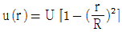
으로 주어질 때 유량으로 옳은 것은? (단, U는 관 중심에서 이루는 최대 유속이며, r은 관 중심에서 반지름 방향으로의 거리이다.)- πR2U
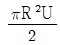
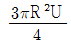
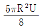
(정답률: 54%)
24. 20℃, 101 kPa에서 산소(O2) 25g 의 부피는 약 몇 L 인가? (단, 일반기체상수는 8314 J/(kmol·K) 이다.)
- 21.8
- 20.8
- 19.8
- 18.8
(정답률: 39%)
25. 비열이 0.475 kJ/(kg·K) 인 철 10kg을 20℃에서 80℃로 올리는데 필요한 열량은 약 몇kJ인가?
- 222
- 232
- 285
- 315
(정답률: 58%)
26. 회전수 1800 rpm, 유량 4m3/min, 양정 50m 인 원심펌프의 비속도 [m3/min, m, rpm]는 약 얼마인가?
- 46
- 72
- 126
- 191
(정답률: 35%)
27. 그림과 같이 수조차의 탱크 측벽에 안지름이 25cm인 노즐을 설치하여 노즐로부터 물이 분사되고 있다. 노즐 중심은 수면으로부터 3m 아래에 있다고 할 때 수조차가 받는 추력 F는 약 몇 kN 인가? (단, 노면과의 마찰은 무시한다.)
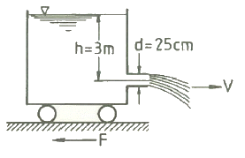
- 1.77
- 2.89
- 4.56
- 5.21
(정답률: 49%)
28. 이상기체를 등온 과정으로 서서히 가열한다. 이 과정을 “PVn = constant” 와 같은 폴리트로픽(polytropic) 과정으로 나타내고자 할 때, 지수 n 의 값은?
- n = 0
- n = 1
- n = k(비열비)
- n = ∞
(정답률: 51%)
29. 안지름이 250mm, 길이가 218m인 주철관을 통하여 물이 유속 3.6 m/s로 흐를 때 손실수두는 약 몇 m인가? (단, 관마찰계수는 0.⑤ 이다.)
- 20.1
- 23.0
- 25.8
- 28.8
(정답률: 47%)
30. 그림과 같이 비중량이 γ1, γ2, γ3 인 세가지의 유체로 채워진 마노미터에서 A점과 B점의 압력 차이 (PA - PB)는?
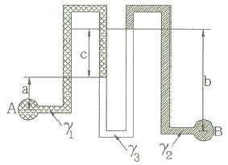
- -aγ1-bγ2+cγ3
- aγ1+bγ2-cγ3
- aγ1-bγ2+cγ3
- aγ1-bγ2-cγ3
(정답률: 42%)
31. 관 내 유동 중 지름이 급격히 커지면서 발생하는 부차적 손실계수는 0.38 이다. 지름이 작은 부분에서의 속도가 0.8 m/s라고 할 때 부차적 손실수두는 약 몇 m인가?
- 0.0045
- 0.0092
- 0.0124
- 0.0825
(정답률: 55%)
32. 피토 정압관으로 지름이 400mm인 풍동의 유속을 측정하였을 때 풍동의 중심에서 정체압과 정압이 각각 수주로 80 mmAq, 40 mmAq 이었다. 풍동 내에서 평균유속을 중심부 유속의 3/4이라 할 때 공기의 유량은 약 몇 m3/s인가? (단, 풍동 내의 공기 밀도는 1.25 kg/m3이고, 피토관 계수(C)는 1로 한다.)
- 1.15
- 2.36
- 3.56
- 4.71
(정답률: 36%)
33. 비중이 0.89이며 중량이 35N인 유체의 체적은 약 몇 m3인가?
- 0.13 × 10-3
- 2.43 × 10-3
- 3.03 × 10-3
- 4.01 × 10-3
(정답률: 43%)
34. 할론 1301이 밀도 1.4g/cm3, 속도 15 m/s로 지름 50mm 배관을 통해 정상류로 흐르고 있다. 이때 할론 1301의 질량 유량은 약 몇 kg/s인가?
- 20.4
- 30.6
- 41.2
- 52.5
(정답률: 43%)
35. 다음 중 멀리 떨어진 화염으로부터 관찰자가 직접 열기를 느꼈다고 할 때 가장 크게 영향을 미친 열전달 원리는? (단, 화염과 관찰자 사이에 공기흐름은 거의 없다고 가정한다.)
- 복사
- 대류
- 전도
- 비등
(정답률: 62%)
36. 기체를 액체로 변화시킬 때의 조건으로 가장 적합한 것은?
- 온도를 낮추고 압력을 높인다.
- 온도를 높이고 압력을 낮춘다.
- 온도와 압력을 모두 낮춘다.
- 온도와 압력을 모두 높인다.
(정답률: 58%)
37. 그림에서 피스톤 A와 피스톤 B의 단면적이 각각 6cm2, 600cm2 이고, 피스톤 B의 무게가 90 kN이며, 내부에는 비중이 0.75 인 기름으로 채워져 있다. 그림과 같은 상태를 유지하기 위한 피스톤 A의 무게는 약 몇 N인가? (단, C와 D는 수평선상에 있다.)
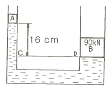
- 756
- 899
- 1252
- 1504
(정답률: 45%)
38. 그림과 같이 높이가 h이고 윗변의 길이가 h/2 인 직각 삼각형으로 된 평판이 자유표면에 윗변을 두고 물속에 수직으로 놓여 있다. 물의 비중량을 γ라고 하면, 이 평판에 작용하는 힘은?
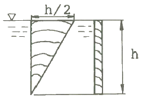
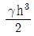
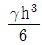
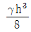
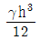
(정답률: 38%)
39. 그림과 같이 수직관로를 통하여 물이 위에서 아래로 흐르고 있다. 손실을 무시할 때 상하에 설치된 압력계의 눈금이 동일하게 지시되도록 하려면 아래의 지름 d는 약 몇 mm로 하여야 하는가? (단, 위의 압력계가 있는 곳에서 유속은 3 m/s, 안지름은 65mm 이고, 압력계의 설치 높이 차이는 5m 이다.)
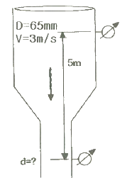
- 30 mm
- 35 mm
- 40 mm
- 45 mm
(정답률: 45%)
40. 배관 내 유체의 흐름속도가 급격히 변화될 때 속도에너지가 압력에너지로 변화되면서 배관 및 관 부속물에 심한 압력파로 때리는 현상을 무엇이라고 하는가?
- 수격 현상
- 서징 현상
- 공동 현상
- 무구속 현상
(정답률: 71%)
3과목: 소방관계법규
41. 다음 위험물 중 위험물안전관리법령에서 정하고 있는 지정수량이 가장 적은 것은?
- 브롬산염류
- 유황
- 알칼리토금속
- 과염소산
(정답률: 47%)
42. 화재조사를 하는 관계인의 정당한 업무를 방해하거나 화재조사를 수행하면서 알게 된 비밀을 다른 사람에게 누설한 사람에 대한 벌칙은?
- 100만원 이하의 벌금
- 150만원 이하의 벌금
- 200만원 이하의 벌금
- 300만원 이하의 벌금
(정답률: 60%)
43. 위험물안전관리법령상 인화성액체위험물(이황화탄소를 제외)의 옥외탱크저장소의 탱크 주위에 설치하여야 하는 방유제의 기준 중 틀린 것은?
- 방유제의 용량은 방유제안에 설치된 탱크가 하나인 때에는 그 탱크 용량의 110% 이상으로 할 것
- 방유제의 용량은 방유제안에 설치된 탱크가 2기 이상인 때에는 그 탱크 중 용량이 최대인 것의 용량의 110 % 이상으로 할 것
- 방유제의 높이 1m 이상 3m 이하, 두께 0.2m 이상, 지하매설깊이 0.5m 이상으로 할 것
- 방유제내의 면적은 80000m2 이하로 할 것
(정답률: 60%)
44. 화재예방, 소방시설 설치·유지 및 안전관리에 관한 법령상 특정소방대상물의 피난시설, 방화 구획 또는 방화시설의 폐쇄·훼손·변경 등의 행위를 한 자에 대한 과태료 기준으로 옳은 것은?
- 200만원 이하의 과태료
- 300만원 이하의 과태료
- 500만원 이하의 과태료
- 600만원 이하의 과태료
(정답률: 57%)
45. 소방신호의 종류가 아닌 것은?
- 진화신호
- 발화신호
- 경계신호
- 해제신호
(정답률: 62%)
46. 자동화재탐지설비를 설치하여야 하는 특정소방대상물의 기준으로 틀린 것은?
- 지하구
- 지하가 중 터널로서 길이 700 m 이상인 것
- 노유자 생활시설
- 복합건축물로서 연면적 600m2 이상인 것
(정답률: 52%)
47. 소방기본법령상 소방용수시설별 설치기준 중 틀린 것은?
- 급수탑 개폐벨브는 지상에서 1.5m 이상 1.7m 이하의 위치에 설치하도록 할 것
- 소화전은 상수도와 연결하여 지하식 또는 지상식의 구조로 하고, 소방용호스와 연결하는 소화전의 연결금속구의 구경은 100 mm로 할 것
- 저수조 흡수관의 투입구가 사각형의 경우에는 한 변의 길이가 60cm 이상, 원형의 경우에는 지름이 60cm 이상일 것
- 저수조는 지면으로부터의 낙차가 4.5m 이하일 것
(정답률: 50%)
48. 대통령령이 정하는 특정소방대상물에는 관계인이 소방안전관리자를 선임하지 않은 경우의 벌금 규정은?
- 100만원 이하
- 200만원 이하
- 300만원 이하
- 1천만원 이하
(정답률: 56%)
49. 소방기본법상 소방활동구역의 설정권자로 옳은 것은?
- 소방본부장
- 소방서장
- 소방대장
- 시·도지사
(정답률: 55%)
50. 건축허가등을 함에 있어서 미리 소방본부장 또는 소방서장의 동의를 받아야 하는 건축물 등의 범위로 차고·주차장으로 사용되는 층 중 바닥면적이 몇 제곱미터 이상인 층이 있는 시설에 시설하여야 하는가?
- 50
- 100
- 200
- 400
(정답률: 63%)
51. 위험물안전관리법상 제1류 위험물의 성질은?
- 산화성 액체
- 가연성 고체
- 금수성 물질
- 산화성 고체
(정답률: 69%)
52. 소방시설공사업법상 소방시설업자가 등록을 한 후 정당한 사유 없이 1년이 지날 때까지 영업을 개시하지 아니하거나 계속하여 1년 이상 휴업한 때는 몇 개월 이내의 영업정지를 당할 수 있나?
- 1개월 이내
- 2개월 이내
- 3개월 이내
- 6개월 이내
(정답률: 61%)
53. 화재예방, 소방시설 설치·유지 및 안전관리에 관한 법령상 특정소방대상물의 관계인이 특정소방대상물의 규모·용도 및 수용인원 등을 고려하여 갖추어야 하는 소방시설의 종류 기준 중 ㉠, ㉡ 에 알맞은 것은?
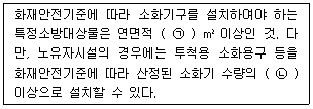
- ㉠ 33, ㉡ 1/2
- ㉠ 33, ㉡ 1/3
- ㉠ 50, ㉡ 1/2
- ㉠ 50, ㉡ 1/3
(정답률: 62%)
54. 자체소방대를 설치하여야 하는 제조소 등으로 옳은 것은?
- 지정수량 3000배의 아세톤을 취급하는 일반취급소
- 지정수량 3500배의 칼륨을 취급하는 제조소
- 지정수량 4000배의 등유를 이동저장탱크에 주입하는 일반취급소
- 지정수량 4500배의 기계유를 유압장치로 취급하는 일반취급소
(정답률: 48%)
55. 화재예방, 소방시설 설치·유지 및 안전관리에 관한 법령상 소방안전관리대상물의 소방 계획서에 포함되어야 하는 사항이 아닌 것은?
- 예방규정을 정하는 제조소등의 위험물 저장· 취급에 관한 사항
- 소방시설·피난시설 및 방화시설의 점검·정비계획
- 특정소방대상물의 근무자 및 거주자의 자위소방대 조직과 대원의 임무에 관한 사항
- 방화구획, 제연구획, 건축물의 내부 마감재료(불연재료·준불연재료 또는 난연재료로 사용된 것) 및 방염물품의 사용현황과 그 밖의 방화구조 및 설비의 유지·관리계획
(정답률: 35%)
56. 소방기본법령상 특수가연물의 저장 기준 중 ㉠, ㉡, ㉢ 에 알맞은 것은? (단, 석탄·목탄류를 발전용으로 저장하는 경우는 제외한다.)
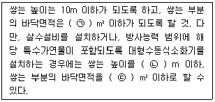
- ㉠ 200, ㉡ 20, ㉢ 400
- ㉠ 200, ㉡ 15, ㉢ 300
- ㉠ 50, ㉡ 20, ㉢ 100
- ㉠ 50, ㉡ 15, ㉢ 200
(정답률: 62%)
57. 화재예방, 소방시설 설치·유지 및 안전관리에 관한 법령상 근무자 및 거주자에게 소방훈련·교육을 실시하여야 하는 특정소방대상물의 기준 중 다음 ( )에 알맞은 것은?
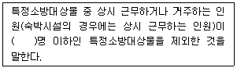
- 3
- 5
- 7
- 10
(정답률: 60%)
58. 소방특별조사 결과에 따른 조치명령으로 인하여 손실을 입은 자에 대한 손실보상에 관한 설명으로 틀린 것은?
- 손실보상에 관하여는 시·도지사와 손실을 입은 자가 협의하여야 한다.
- 보상금액에 관한 협의가 성립되지 아니한 경우에는 시·도지사는 그 보상금액을 지급하거나 공탁하고 이를 상대방에게 알려야 한다.
- 시·도지사가 손실을 보상하는 경우에는 공시지가로 보상하여야 한다.
- 보상금의 지급 또는 공탁의 통지에 불복이 있는 자는 지급 또는 공탁의 통지를 받은 날부터 30일 이내에 관할토지수용위원회에 재결을 신청할 수 있다.
(정답률: 62%)
59. 화재예방, 소방시설 설치·유지 및 안전관리에 관한 법령상 소방시설 등에 대한 자체점검 중 종합정밀점검 대상기준으로 틀린 것은?
- 제연설비가 설치된 터널
- 노래연습장으로서 연면적이 2000 m2 이상인 것
- 아파트는 연면적 5000 m2 이상이고 16층 이상인 것
- 소방대가 근무하지 않는 국공립학교 중 연면적이 1000 m2 이상인 것으로서 자동화재탐지설비가 설치된 것
(정답률: 43%)
60. 소방활동구역의 출입자로서 대통령령이 정하는 자에 속하지 않는 사람은?
- 의사·간호사 그 밖의 구조 구급업무에 종사하는 자
- 소방활동구역 밖에 있는 소방대상물의 소유자·관리자 또는 점유자
- 취재인력 등 보도업무에 종사하는 자
- 수사업무에 종사하는 자
(정답률: 67%)
4과목: 소방기계시설의 구조 및 원리
61. 스프링클러설비에서 건식 설비와 비교한 습식 설비의 특징에 관한 설명으로 옳지 않은 것은?
- 구조가 상대적으로 간단하고 설비비가 적게 든다.
- 동결의 우려가 있는 곳에는 사용하기가 적절하지 않다.
- 헤드 개방 시 즉시 방수된다.
- 오동작이 발생할 때 물에 의해 야기되는 피해가 적다.
(정답률: 66%)
62. 지상 5층인 사무실용도의 소방대상물에 연결송수관설비를 설치할 경우 최소로 설치할 수 있는 방수구의 총 수는? (단, 방수구는 각 층별 1개의 설치로 충분하고, 소방차 접근이 가능한 피난층은 1개층(1층)이다.)
- 2개
- 3개
- 4개
- 5개
(정답률: 42%)
63. 다음 중 완강기의 주요 구성요소가 아닌 것은?
- 앵커볼트
- 속도조절기
- 연결금속구
- 로프
(정답률: 63%)
64. 상수도소화용수설비에서 소화전의 호칭지름 100mm 이상을 연결할 수 있는 상수도 배관의 호칭지름은 몇 mm 이상이어야 하는가?
- 50
- 75
- 80
- 100
(정답률: 65%)
65. 인명구조기구를 설치하여야 하는 특정소방대상물 중 공기호흡기만을 설치 가능한 대상물에 포함되지 않는 것은?
- 수용인원 100명 이상인 영화상영관
- 운수시설 중 지하역사
- 판매시설 중 대규모점포
- 호스릴 이산화탄소소화설비를 설치하여야 하는 특정소방대상물
(정답률: 46%)
66. 소화능력단위에 의한 분류에서 소형소화기를 올바르게 설명한 것은?
- 능력단위가 1단위 이상이면서 대형소화기의 능력단위 미만인 소화기이다.
- 능력단위가 3단위 이상이면서 대형소화기의 능력단위 미만인 소화기이다.
- 능력단위가 5단위 이상이면서 대형소화기의 능력단위 미만인 소화기이다.
- 능력단위가 10단위 이상이면서 대형소화기의 능력단위 미만인 소화기이다.
(정답률: 62%)
67. 이산화탄소 소화약제 저장용기에 대한 설명으로 옳지 않은 것은?
- 온도가 40℃ 이하인 장소에 설치할 것
- 방화문으로 구획된 실에 설치할 것
- 고압식 저장용기의 충전비는 1.3 이상 1.7 이하로 할 것
- 저압식 저장용기에는 2.3MPa이상 1.9MPa 이하에서 작동하는 압력경보장치를 설치할 것
(정답률: 56%)
68. 일반적으로 지하층에 설치될 수 있는 피난기구는?
- 피난교
- 승강식 피난기
- 구조대
- 피난용 트랩
(정답률: 66%)
69. 이산화탄소 소화설비 중 호스릴 방식으로 설치되는 호스접결구는 방호대상물의 각 부분으로부터 수평거리 몇 m 이하이어야 하는가?
- 15m 이하
- 20 m 이하
- 25m 이하
- 40m 이하
(정답률: 55%)
70. 포소화설비에서 고정지붕구조 또는 부상덮개부착고정지붕구조의 탱크에 사용하는 포 방출구 형식으로 방출된 포가 탱크옆판의 내면을 따라 흘러내려 가면서 액면 아래로 몰입되거나 액면을 뒤섞지 않고 액면상을 덮을 수 있는 반사판 및 탱크내의 위험물증기가 외부로 역류되는 것을 저지할 수 있는 구조·기구를 갖는 포방출구는?
- Ⅰ형 방출구
- Ⅱ형 방출구
- Ⅲ형 방출구
- 특형 방출구
(정답률: 55%)
71. 습식스프링클러설비 및 부압식스프링클러설비 외의 스프링클러설비에는 특정한 제외조건 이외에는 상향식스프링클러헤드를 설치해야 하는데, 다음 중 특정한 제외조건에 해당하지 않는 경우는?
- 스프링클러헤드의 설치장소가 동파의 우려가 없는 곳인 경우
- 플러쉬형 스프링클러헤드를 사용하는 경우
- 드라이펜던트 스프링클러헤드를 사용하는 경우
- 개방형 스프링클러헤드를 사용하는 경우
(정답률: 40%)
72. 전역방출방식의 분말소화설비에서 분말이 방사되기 전, 다음에 해당하는 개구부 또는 통기구 중 폐쇄하지 않아도 되는 것은?
- 천장에 설치된 통기구
- 바닥으로부터 해당 층의 높이의 1/2 높이 위치에 설치된 통기구
- 바닥으로부터 해당 층의 높이의 1/3 높이 위치에 설치된 개구부
- 천장으로부터 아래로 1.2m 떨어진 벽체에 설치된 통기구
(정답률: 56%)
73. 다음 소방시설 중 내진설계가 요구되는 소방시설이 아닌 것은?
- 옥내소화전설비
- 옥외소화전설비
- 물분무소화설비
- 스프링클러설비
(정답률: 65%)
74. 제연설비 설치장소의 제연구역 구획기준으로 틀린 것은?
- 하나의 제연구역의 면적은 1000 m2 이내로 할것
- 거실과 통로는 상호 제연구획 할 것
- 통로상의 제연구역은 보행중심선의 길이가 60m를 초과하지 아니할 것
- 하나의 제연구역은 지름 40m 원내에 틀어갈 수 있을 것
(정답률: 65%)
75. 바닥면적이 500m2 인 의료시설에 필요한 소화기구의 소화능력 단위는 몇 단위 이상인가? (단, 소화능력단위 기준은 바닥면적만 고려한다.)
- 2.5
- 5
- 10
- 16.7
(정답률: 54%)
76. 상수도소화용수설비를 설치하여야 하는 특정소방대상물의 연면적 기준으로 옳은 것은? (단, 특정소방대상물 중 숙박시설로 한정한다.)
- 연면적 1000m2 이상인 경우
- 연면적 1500m2 이상인 경우
- 연면적 3000m2 이상인 경우
- 연면적 5000m2 이상인 경우
(정답률: 36%)
77. 지상 5층 건물의 2층 슈퍼마켓에 스프링클러 설비가 설치되어 있다. 이때 설치된 폐쇄형 헤드의 수는 총 40개라고 할 때 최소 저수량 산출시 스프링클러 헤드의 기준 개수로 옳은 것은? (단, 다른 층의 폐쇄형 헤드의 수는 모두 40개 미만이라고 가정한다.)
- 10개
- 20개
- 30개
- 40개
(정답률: 48%)
78. 다음은 옥외소화전설비에서 소화전함의 설치기준에 관한 설명이다. 팔호 안에 들어갈 말로 옳은 것은?
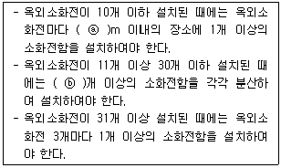
- ⓐ 5, ⓑ 11
- ⓐ 7, ⓑ 11
- ⓐ 5, ⓑ 15
- ⓐ 7, ⓑ 15
(정답률: 60%)
79. 화재예방, 소방시설 설치·유지 및 안전관리에 관한 법령에 따라 구분된 소방설비 중 “물분무등소화설비” 에 속하지 않는 것은?
- 포소화설비
- 이산화탄소소화설비
- 스프링클러설비
- 강화액소화설비
(정답률: 45%)
80. 포소화설비의 수동식 기동장치의 조작부 설치위치는?
- 바닥으로부터 0.5m 이상, 1.2m 이하
- 바닥으로부터 0.8m 이상, 1.2m 이하
- 바닥으로부터 0.8m 이상, 1.5m 이하
- 바닥으로부터 0.5m 이상, 1.5m 이하
(정답률: 65%)